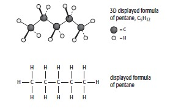

Hydrocarbons
Crude oil is our main source of hydrocarbons. Hydrocarbons are compounds containing carbon and hydrogen only. They provide us with fuels such as petrol, diesel and kerosene. Hydrocarbons are also the starting compounds we use to make many new compounds, such as most of the plastics we meet in everyday life.
The majority of compounds found in the mixture of hydrocarbons we call crude oil are alkanes. We have met the first ten members of this homologous series in Table 14.3 (page 192). The general formula for the alkanes is CnH2n+2 + 2. For example, the molecular formula of pentane, in which n = 5, is C5H12. Figure 15.2 shows some different ways of representing pentane molecules.


Sucrose is a dimer of glucose and fructose molecules. In the first step of alcoholic fermentation, the enzyme invertase cleaves the glycosidic linkage between the glucose and fructose molecules.
The fractional distillation of crude oil takes place in a fractionating column. The top of the column is at a lower temperature than the bottom of the column. The crude oil enters as vapour and liquid. The liquids are drawn off at the bottom of the column while more volatile hydrocarbons rise up the column. They condense at different levels as the temperature gradually falls and are collected as liquids. The most volatile hydrocarbons, which are short-chain alkanes (methane to butane), leave the top of the column as gases.